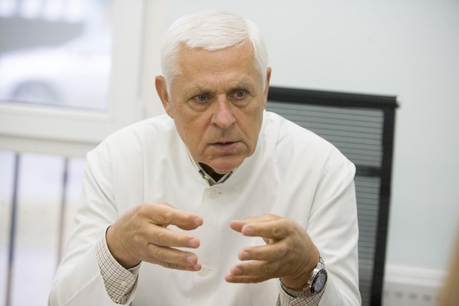

Le articolazioni sono il punto più doloroso di molte persone che siano oltre i 50 anni. Secondo le statistiche dell'European Institute of Health, le articolazioni sono più o meno danneggiate nel 95% delle persone che abbiano superato i 50 anni. Questo è collegato al deperimento naturale del tessuto cartilagineo.
Tutti i prodotti farmaceutici disponibili hanno lo scopo di alleviare temporaneamente i sintomi, ma non di ricostituire completamente le articolazioni. Gli scienziati svizzeri hanno proposto un metodo unico per la rigenerazione dei tessuti della cartilagine. Grazie a questo metodo, non solo passa il dolore, ma ha luogo anche una completa guarigione dell'articolazione.
Poiché il 98% di tutte le malattie articolari è associato all'invecchiamento e all'usura della cartilagine, questo metodo può curare una vasta gamma di patologie:
- Artrosi;
- Artrite;
- Osteocondrosi;
- Bursite;
- Podagra;
- Osteoporosi;
- Periartrite;
- Sinovite;
- Sindrome di Felty;
- Morbo di Still;
- Morbo di Bechterew;
- Igroma;
- Reumatismi;
- Morbo di Reiter.
In occasione di un incontro con i giornalisti, la scoperta degli scienziati svizzeri è stata commentata da un famoso reumatologo, il professor Thomas Banks.
Giornalista: In cosa hanno fallito i metodi esistenti per la cura delle articolazioni? Oggi nelle farmacie ci sono molti preparati differenti, no?
Thomas Blank: Sì, in effetti esistono molti preparati per le articolazioni, le farmacie ne sono letteralmente piene. Tuttavia l'impressione che ci siano molti preparati per la rigenerazione dei tessuti è falsa. In realtà, tutti questi preparati agiscono in maniera identica. Chi abbia già avuto a che fare con patologie articolari sa bene che rigenerare completamente le articolazioni è praticamente impossibile.
Il 98% delle malattie articolari ha infatti luogo a causa delle alterazioni delle caratteristiche del tessuto cartilagineo stesso. Sotto l'influenza di diversi fattori sfavorevoli, il tessuto cartilagineo comincia a seccarsi. Le sue caratteristiche ammortizzanti diminuiscono, la cartilagine comincia a creparsi. Se lo strato cartilagineo diminuisce a causa dell'usura naturale, abbiamo l'artrosi. Se nelle fessura della cartilagine finisce un'infezione e l'articolazione si infiamma, abbiamo l'artrite. Se nell'articolazione le cellule cominciano a dividersi in maniera anomala, abbiamo un'artrite reumatoide. Con questo voglio dimostrare ancora che tutte le malattie articolari hanno una sola origine.
Ad oggi, i mezzi più efficaci per eliminare i dolori articolari sono i condroprotettori e le iniezioni di acido ialuronico. Questi mezzi aiutano effettivamente a rigenerare le articolazioni, ma solo temporaneamente, come dimostra la pratica. Essi, infatti, non eliminano la causa ultima del disfacimento articolare, per cui nell'arco di 3-6 mesi il problema si presenta di nuovo. Bisogna fare di nuovo le iniezioni ed assumere i condroprotettori.
Giornalista: In che consiste la scoperta terapeutica degli specialisti svizzeri?
Thomas Banks: Gli specialisti svizzeri sono riusciti ad avviare un meccanismo naturale di autorigenerazione dello strato cartilagineo. Di conseguenza, la cartilagine inizia a rinnovarsi e l'articolazione viene completamente rigenerata. Anche nei pazienti di età compresa tra 60 e 70 anni lo spessore dello strato cartilagineo diventa lo stesso di individui giovani. E, si noti, questo metodo aiuta a guarire l'articolazione non per sei mesi e nemmeno per un anno, ma per almeno 10-15 anni, fino a quando la cartilagine non cominci a logorarsi di nuovo. Senza dubbio, si tratta di un colossale passo avanti nel campo delle cure articolari.
Voglio mostrarvi i risultati dei test condotti dagli scienziati svizzeri presso l'Istituto di Reumatologia ed Ortopedia di Ginevra. Hanno partecipato ai test circa 500 volontari: quasi tutti erano persone avanti negli anni. Soffrivano tutti di articolazioni degenerate ed infiammate: li si è curati con il nuovo metodo elaborato.
Risultati dei test:
- Il 100% dei testati comunica un miglioramento dell'afflusso di sangue alle articolazioni;
- Il 100% dei testati comunica che le articolazioni hanno cessato di far male, sono scomparse la durezza ossea e la mobilità ridotta;
- Il 98% dei testati comunica la scomparsa delle infiammazioni, comprese quelle interne alle ossa;
- Il 95% dei testati comunica un miglioramento articolare ed un aumento della quantità di liquido sinoviale;
- Il 99% dei testati comunica la completa scomparsa dei depositi salini;
- Il 100% dei testati comunica una completa assenza di controindicazioni ed assuefazione.
Come avviene la rigenerazione delle articolazioni? Le articolazioni hanno una vasta rete di sottili capillari, per i quali vengono forniti nutrienti alla capsula articolare e alla cartilagine e vengono rimossi i prodotti di elaborazione organica. Dal momento che le articolazioni sono elementi estremamente mobili, hanno bisogno di un ottimo afflusso di sangue. Tuttavia, con l'età o sotto l'influenza di vari fattori negativi, i capillari si ostruiscono e cessano di funzionare. La qualità dell'afflusso sanguigno peggiora in maniera significativa. A sua volta, ciò porta a rigenerazione e rinnovamento più lenti della cartilagine. L'articolazione si intossica, invecchia e si secca.

Tutte le articolazioni hanno un complesso sistema circolatorio. Le disfunzioni di tale sistema portano a un deterioramento delle proprietà del fluido e della matrice infra-articolare.
Gli scienziati svizzeri sono riusciti a trovare un modo per migliorare la rete capillare, liberando questi vasi sottilissimi dal colesterolo che vi si accumula. Come si è scoperto, i depositi di colesterolo possono essere distrutti dagli acidi grassi polinsaturi (Omega-3, Omega-6, Omega-9), se hanno un rapporto di 1:3:10. Gli scienziati hanno trovato solo una pianta in cui si riscontrino acidi grassi insaturi esattamente in questo rapporto: la cannabis. La cannabis sembra quasi essere stata creata appositamente dalla Natura per curare le articolazioni. Questa scoperta è un merito degli specialisti svizzeri.
Naturalmente, stiamo parlando di uno speciale olio terapeutico, in cui la quantità di sostanze biologicamente attive è 50-60 volte superiore agli oli di canapa normali. L'olio di cannabis terapeutico ad alta concentrazione può, per l'appunto, far fronte alle malattie articolari.
Questo metodo è particolarmente utile per le persone in età avanzata. È sufficiente assumere un mese solo l'olio di cannabis ad alta concentrazione per rigenerare le articolazioni del 50%. Nell'arco di 2-3 mesi di assunzione regolare le articolazioni si rigenerano del tutto e a lungo.
Giornalista: Quando quest'olio sarà disponibile nelle farmacie europee? A che prezzo?
Thomas Banks: Secondo il produttore, le spedizioni di capsule nelle catene farmaceutiche europee, incluso il nostro paese, inizieranno non prima dell'anno 2022. Questo termine è dovuto al fatto che l'olio di cannabis è un prodotto piuttosto difficile da ottenere. Ad oggi in Europa praticamente non esistono piantagioni di canapa, da cui viene prodotto l'olio. Pertanto, il produttore non può aumentare i volumi di produzione e la quantità disponibile ora non è sufficiente per essere venduta attraverso le catene farmaceutiche.
Per questo, al momento attuale, l'olio di cannabis ad alta concentrazione è un preparato di difficile accesso. L'unico luogo dove lo si può ordinare è il sito ufficiale del produttore.

CAPSULE
Per ora in capsule viene venduto al prezzo di produzione. L'olio può essere assunto senza prescrizione medica: è completamente naturale e non può danneggiare l'organismo. Non solo: contribuisce alla salute generale, poiché purifica i vasi sanguigni di tutto il corpo.
Consiglio a quanti decidano di provare questo olio per la rigenerazione articolare di affrettarsi, poiché viene venduto in quantità limitata. Quindi consiglierei a tutti di ordinare le capsule il prima possibile mentre sono ancora disponibili.


Nella Laurenti
Jessica Tulliani
Franco Della Seta
Elisa Boschi
Giuseppe Brunelli
Michele Gorla
Adele Brizzi
Anna Luzi
Stefano Belli
Barecchia
Simone Stocchi
Enrico Longo
Ester Efrati
Alberto Giorgi